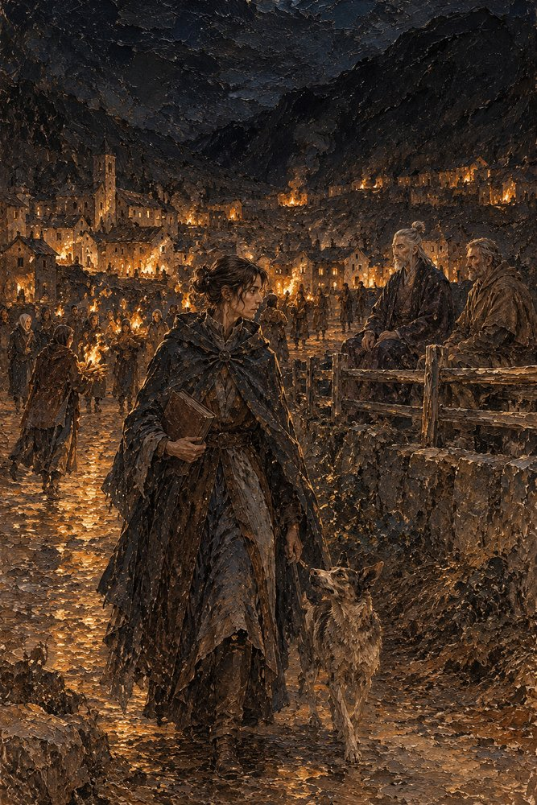

Record 12 of 15
Lit from a hundred kitchens
At the second hour of the dark on the evening of the Interdict of the Withdrawn Flame, with the Hearth-Lamp put out, the people of Focolare come out of the lanes with their small fires cupped in their hands and relight the Ring from a hundred kitchens. Agata walks the whole of the curve with the brown book shut under her arm and a one-eared dog at her heel, and does not write; Higaide and Ubaldo watch from the fence.
A mountain village of stone houses at night, with torches and small fires among the roofs; a woman with a book under her arm and a brooch on her cloak walks beside a lean dog, a crowd with firewood and torches behind her, and at the right two men sit at a wooden fence: a topknot man in a dark robe and a grey-bearded man in a brown cloak..